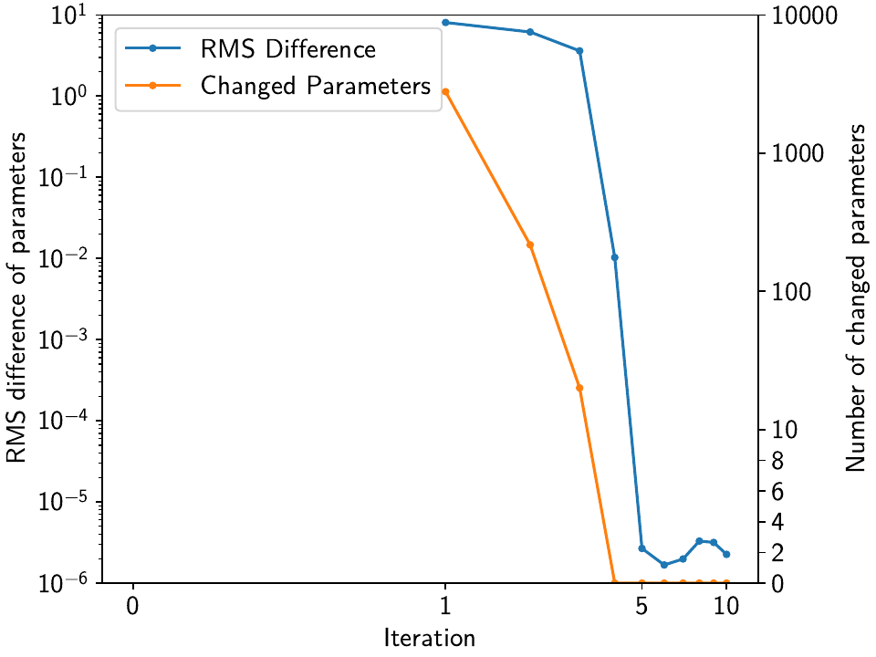

Tutorial 3: Incorporating Spatial Coherence¶
One of the main goals of disstans that should make it stand out from other timeseries analysis software/routines is its ability to use spatial coherence as an additional source of information and constrain. In general, signals like earthquakes, slip events, or seasonal signals are spatially correlated, as the process have the same sources but affect multiple stations. By using this knowledge in combination with the enforcement of sparsity, we can make sure that the models that affect each station have the same character.
On the flipside, signals that only affect a single station are usually noise (like antenna maintenance), which we would like to isolate. By making it harder for a station to fit a model when no station around it sees the same signal, its residuals will become very large around the time in question, and it is easier to therefore detect processes that need to be looked at (or fitted specifically for that station).
In this tutorial, we will therefore create a synthetic network of 16 stations, seeing two data components (East and North) each, that are affected by both regional processes (slow slip events, an earthquake, and seasonal variations) as well as local ones (a maintenance step and some local colored noise). Common Mode noise is added and estimated as well. We will assess the incorporation of spatial coherence on a station-by-station basis (misfit at the station with the singular maintenance step) as well as over the entire network (by looking at the parameter correlation matrix between stations). The fitting and evaluating will be done in parallel to achieve a significant speed-up.
Note
By default, disstans does not use parallelization because of the intricacies
between Python, NumPy/SciPy, and the low-level math libraries like BLAS/LAPACK
(which can differ from machine to machine). For more information, including how
to properly set up parallelization, see parallelize().
Preparations¶
We need to prepare two things: parallelization (which can differ from the machine used to
test this tutorial to yours, see the note above) and a random number seed to make the data
and figures reproducible.
In this case here, setting the environment variable 'OMP_NUM_THREADS'
in the script does the trick, and we can set the number of threads manually:
>>> import os
>>> os.environ['OMP_NUM_THREADS'] = '1'
>>> import disstans
>>> disstans.defaults["general"]["num_threads"] = 10
And we can create a random number generator just like in the previous example:
>>> import numpy as np
>>> rng = np.random.default_rng(0)
Dreaming up a network¶
The network we’re dreaming of is a collection of 16 stations situated on the beautiful
Null Island. There is no reason the
stations shouldn’t be named after fake kitten names created by a neural network of
AI Weirdness.
So, let’s create the locations on a line-like grid with some random variations,
instantiate a Network object, and add the corresponding
Station objects:
>>> from disstans import Network, Station
>>> net_name = "NullIsland"
>>> station_names = ["Jeckle", "Cylon", "Marper", "Timble",
... "Macnaw", "Colzyy", "Mrror", "Mankith",
... "Lingo", "Marvish", "Corko", "Kogon",
... "Malool", "Aarla", "Tygrar", "Jozga"]
>>> nlon, nlat = 16, 1
>>> num_stations = nlon * nlat
>>> lons, lats = np.meshgrid(np.linspace(0, 1, num=nlon),
... np.linspace(-0.1, 0.1, num=nlat))
>>> net = Network(name=net_name)
>>> for (istat, stat_name), lon, lat in zip(enumerate(station_names),
... lons.ravel(), lats.ravel()):
... temp_loc = [lat + rng.normal()*0.02 + int(istat % 2 == 0)*0.1,
... lon + rng.normal()*0.01, 0]
... net[stat_name] = Station(name=stat_name,
... location=temp_loc)
Fantasizing data¶
Just as above, we first need a vector of time stamps:
>>> import pandas as pd
>>> t_start_str = "2000-01-01"
>>> t_end_str = "2010-01-01"
>>> timevector = pd.date_range(start=t_start_str, end=t_end_str, freq="1D")
Remember that we wanted signals that are coherent in space. To do this, it is easiest if we define a function that takes the location of a station as input, and returns model parameters (for both the East and North components). That way, every station gets the same signals, but we can vary the amplitudes to simulate decreasing distance to the signal source by making the amplitude drop off with increasing longitude. The model parameters are then used in the next step when the model objects are created.
The function will also need the common mode noise that should be added to each station, and the variances and other distrbution parameters when generating the noise. Let’s define those first:
>>> # create CME
>>> cme_noise = rng.normal(size=(timevector.size, 2)) * 0.2
>>> # define noise covariance matrix
>>> from scipy.stats import invgamma, laplace
>>> var_e, var_n, cov_en = 0.354, 0.538, 0.015
>>> invgamma_e_alpha, invgamma_e_scale = 2.569, 0.274
>>> invgamma_n_alpha, invgamma_n_scale = 3.054, 0.536
>>> laplace_en_scale = 0.031
>>> noise_cov = np.array([[var_e, cov_en], [cov_en, var_n]])
Here, we have defined (1) a covariance matrix from which to generate normally-distributed noise for the observations, (2) \(\alpha\) and scale parameters for an inverse-gamma-distributed sampling of observation variances, and (3) a laplacian-distributed sampling of observation covariances. With these variables, and the common mode error, we can create the actual function introduced above:
>>> def generate_parameters_noise(loc, rng):
... lon, lat = loc[1], loc[0]
... p_sec = np.array([[0, 0], [1, -1]])
... p_seas = rng.uniform(-0.1, 0.1, size=(2, 2))
... p_sse1 = np.array([[8, -8]])*np.exp(-(4 * lon**2)) # from the left
... p_sse2 = np.array([[6, -6]])*np.exp(-(4 * lon**2)) # from the left
... p_sse3 = np.array([[10, -10]])*np.exp(-(4 * lon**2)) # from the left
... p_eq = np.array([[-5, 5]])
... meas_noise = rng.multivariate_normal(mean=(0, 0), cov=noise_cov,
... size=timevector.size) * 0.5
... noisevec = meas_noise + cme_noise
... estim_var_cov = np.stack([invgamma.rvs(invgamma_e_alpha, loc=var_e,
... scale=invgamma_e_scale,
... size=timevector.size, random_state=rng),
... invgamma.rvs(invgamma_n_alpha, loc=var_n,
... scale=invgamma_n_scale,
... size=timevector.size, random_state=rng),
... laplace.rvs(loc=cov_en, scale=laplace_en_scale,
... size=timevector.size, random_state=rng)], axis=1)
... return p_sec, p_seas, p_eq, p_sse1, p_sse2, p_sse3, noisevec, estim_var_cov
Now, we have to do the (slightly grueling) work of creating synthetic data, creating
model and timeseries objects, assigning the parameters to them, and then add them
to the station objects of the network - basically what we did in the previous tutorial,
but for every station. The following code is a bit much, but should still be
understandable when comparing side-by-side with the previous, single-station
example. The one important difference is that we do not yet add the model dictionary
to the station, since we will not be estimating models on the 'Raw' timeseries,
but rather a cleaner timeseries after we remove the CME.
>>> from copy import deepcopy
>>> from disstans import Timeseries
>>> from disstans.models import Arctangent, Polynomial, Sinusoidal, Step, \
... SplineSet, Logarithmic
>>> from disstans.tools import create_powerlaw_noise
>>> mdl_coll, mdl_coll_synth = {}, {} # containers for the model objects
>>> synth_coll = {} # dictionary of synthetic data & noise for each stations
>>> for station in net:
... # think of some model parameters
... p_sec, p_seas, p_eq, p_sse1, p_sse2, p_sse3, noisevec, estim_var_cov = \
... generate_parameters_noise(station.location, rng)
... # create model objects
... mdl_sec = Polynomial(order=1, time_unit="Y", t_reference=t_start_str)
... mdl_seas = Sinusoidal(period=1, time_unit="Y", t_reference=t_start_str)
... mdl_eq = Step(["2002-07-01"])
... mdl_post = Logarithmic(tau=20, t_reference="2002-07-01")
... # Arctangent is for the truth, SplineSet are for how we will estimate them
... mdl_sse1 = Arctangent(tau=40, t_reference="2001-07-01")
... mdl_sse2 = Arctangent(tau=40, t_reference="2003-07-01")
... mdl_sse3 = Arctangent(tau=400, t_reference="2007-01-01")
... # we could align the Arctangents with the spline center times
... # (e.g. 2001-07-24, 2003-06-09, 2007-07-02) but that would never happen in
... # real life so it would just unrealistically embellish our results
... mdl_trans = SplineSet(degree=2,
... t_center_start=t_start_str,
... t_center_end=t_end_str,
... list_num_knots=[int(1+2**n) for n in range(3, 8)])
... # collect the models in the dictionary
... mdl_coll_synth[station.name] = {"Secular": mdl_sec,
... "Seasonal": mdl_seas,
... "Earthquake": mdl_eq,
... "Postseismic": mdl_post}
... mdl_coll[station.name] = deepcopy(mdl_coll_synth[station.name])
... mdl_coll_synth[station.name].update({"SSE1": mdl_sse1,
... "SSE2": mdl_sse2,
... "SSE3": mdl_sse3})
... mdl_coll[station.name].update({"Transient": mdl_trans})
... # only the model objects that will not be associated with the station
... # get their model parameters read in
... mdl_sec.read_parameters(p_sec)
... mdl_seas.read_parameters(p_seas)
... mdl_eq.read_parameters(p_eq)
... mdl_post.read_parameters(p_eq/5)
... mdl_sse1.read_parameters(p_sse1)
... mdl_sse2.read_parameters(p_sse2)
... mdl_sse3.read_parameters(p_sse3)
... # now, evaluate the models
... # noise will be white + colored
... gen_data = \
... {"seas+sec+eq": (mdl_sec.evaluate(timevector)["fit"] +
... mdl_seas.evaluate(timevector)["fit"] +
... mdl_eq.evaluate(timevector)["fit"] +
... mdl_post.evaluate(timevector)["fit"]),
... "trans": (mdl_sse1.evaluate(timevector)["fit"] +
... mdl_sse2.evaluate(timevector)["fit"] +
... mdl_sse3.evaluate(timevector)["fit"]),
... "noise": noisevec}
... # for one station, we'll add a significant colored noise process
... # but only after the first third, where there are no strong, short-term signals
... if station.name == "Cylon":
... gen_data["noise"][timevector.size//3:, :] += \
... create_powerlaw_noise(size=(2 * timevector.size // 3, 2),
... exponent=1.6, seed=rng) * np.array([[0.3, 0.4]])
... # for one special station, we add the maintenance step
... # repeating all steps above
... if station.name == "Corko":
... # time and amplitude
... mdl_maint = Step(["2005-01-01"])
... p_maint = np.array([[-5, 0]])
... # add to station and synthetic data
... mdl_coll_synth[station.name].update({"Maintenance": mdl_maint})
... mdl_maint.read_parameters(p_maint)
... gen_data["seas+sec+eq"] += mdl_maint.evaluate(timevector)["fit"]
... # now we sum the components up...
... gen_data["truth"] = gen_data["seas+sec+eq"] + gen_data["trans"]
... gen_data["data"] = gen_data["truth"] + gen_data["noise"]
... synth_coll[station.name] = gen_data
... # ... and assign them to the station as timeseries objects
... station["Truth"] = \
... Timeseries.from_array(timevector=timevector,
... data=gen_data["truth"],
... src="synthetic",
... data_unit="mm",
... data_cols=["E", "N"])
... station["Raw"] = \
... Timeseries.from_array(timevector=timevector,
... data=gen_data["data"],
... var=estim_var_cov[:, :2],
... cov=estim_var_cov[:, 2],
... src="synthetic",
... data_unit="mm",
... data_cols=["E", "N"])
Let’s have a look at the summary of the first station to see what we added:
>>> print(net["Jeckle"])
Station Jeckle at [0.0025146044218678637, -0.0013210486329130189, 0] with timeseries
Truth
- Source: synthetic
- Units: mm
- Shape: (3654, 2)
- Data: ['E', 'N']
Raw
- Source: synthetic
- Units: mm
- Shape: (3654, 2)
- Data: ['E', 'N']
- Variances: ['E_var', 'N_var']
- Covariances: ['E_N_cov']
One can also have a look at an interactive map and inspect the data and models
of the stations using gui():
>>> net.gui()
Which will present the following map:

Then, selecting the first station called “Jeckle” will produce the following plot
of all timeseries associated with that station, 'Truth' and the noisy
'Raw', in both East and North components:

For this station, the signal is obviously much larger than the noise, but if you select stations further east, you’ll see how the noise becomes the more dominant part. How well we can recover the original signal can therefore be tested by looking at all stations from west to east.
The figures above can either be saved from the interactive window, or by running
gui() in a non-interactive mode:
>>> net.gui(station="Jeckle", save=True, save_map=True)
Removing the Common Mode Error¶
To remove the common mode error that we added, we first need a high-pass filtered
version of our 'Raw' timeseries. We can do this effectively and step-sensitive
by calculating the running median of the timeseries, and then removing this
smoothed timeseries from the original one.
Then, we find the common mode, usually done using Principal or Independent Component Analysis. Lastly, we remove it from the original timeseries, which then yields the cleaner timeseries we want to use going forward. In code, the first three steps will look like this:
>>> # running median will be saved in "Filtered" timeseries
>>> net.call_func_ts_return("median", ts_in="Raw", ts_out="Filtered", kernel_size=7)
>>> # high-pass filtered timeseries will be in "Residual"
>>> net.math("Residual", "Raw", "-", "Filtered")
>>> # estimate the common mode
>>> net.call_netwide_func("common_mode", ts_in="Residual", ts_out="CME", method="ica")
To have a closer look at the estimated common mode, one can also use the
graphical_cme() method, which will show plots of the temporal
and spatial components of the estimated CME. If everything goes well, the temporal component
should look like normally-distributed noise, and the spatial component should look like
a homogenous motion of the stations across the network, like this:


Everything that’s now left to do is to subtract the newly-created 'CME' timeseries
from the 'Raw' timeseries, call it the 'Displacement' timeseries, copy over
the uncertainties from the original timeseries (assuming they are independent of the CME
estimation process). In the same loop, we can also now add the model dictionaries we
defined above. Lastly, we can remove the now-obsolete intermediate timeseries.
>>> for station in net:
... # calculate the clean timeseries
... station.add_timeseries("Displacement", station["Raw"] - station["CME"],
... override_data_cols=station["Raw"].data_cols)
... # copy over the uncertainties
... station["Displacement"].add_uncertainties(timeseries=station["Raw"])
... # give the station the models to fit
... station.add_local_model_dict(ts_description="Displacement",
... model_dict=mdl_coll[station.name])
>>> # remove unnecessary intermediate results
>>> net.remove_timeseries("Filtered", "CME", "Residual")
To inspect the result, we can again have a look at the network with
gui(), or print the summary of a station:
>>> print(net["Jeckle"])
Station Jeckle at [0.0025146044218678637, -0.0013210486329130189, 0] with timeseries
Truth
- Source: synthetic
- Units: mm
- Shape: (3654, 2)
- Data: ['E', 'N']
Raw
- Source: synthetic
- Units: mm
- Shape: (3654, 2)
- Data: ['E', 'N']
- Variances: ['E_var', 'N_var']
- Covariances: ['E_N_cov']
Displacement
- Source: synthetic-common_mode
- Units: mm
- Shape: (3654, 2)
- Data: ['E', 'N']
- Variances: ['E_var', 'N_var']
- Covariances: ['E_N_cov']
- Models: ['Secular', 'Seasonal', 'Earthquake', 'Postseismic', 'Transient']
Fitting the data using reweighted L1 regularization¶
We’ll basically do the same processing as at the end of the previous tutorial, but make
use of yet another high-level function to reduce the amount of lines we have to write:
fitevalres(), which combines the two functions
fit() and evaluate() and
also calculates the residual using math().
We’ll start with a single, non-iterative L1-regularized solution:
>>> net.fitevalres(ts_description="Displacement", solver="lasso_regression",
... penalty=10, output_description="Fit_L1", residual_description="Res_L1")
We’ll also calculate the true errors that we only know because we created the data ourselves, and save the transient fitted model as a new timeseries (we’ll use them later):
>>> for stat in net:
... stat["Trans_L1"] = stat.fits["Displacement"]["Transient"].copy(only_data=True)
>>> net.math("Err_L1", "Fit_L1", "-", "Truth")
For this solution and the future ones which will be exploting the spatial structure,
we want to continuously compare the fitted timeseries as well as the scalograms of
the Transient model. So let’s decide on some potentially interesting stations, and
use the gui() function to save some plots:
>>> figure_stations = ["Jeckle", "Cylon", "Marvish", "Mankith", "Corko", "Tygrar", "Jozga"]
>>> for s in figure_stations:
... net.gui(station=s, save="base",
... timeseries=["Displacement", "Res_L1"],
... scalogram_kw_args={"ts": "Displacement", "model": "Transient",
... "cmaprange": 2})
Now, let’s have a look at the two most western stations, Jeckle and Cylon:


While in all cases the models fit the data well, one can observe two things.
First, for the time that we added colored noise to Cylon, just as in the previous tutorial, the transients created by the noise are fit by our spline dictionary.
Second, especially for the time without the colored noise, we can see that apart from a couple splines that are the closest in time and period to the true slow slip events (SSEs) arctangents, most splines that are non-zero in one station are (close to) zero at the other, even though we know that both stations experience the same signal (only with a slightly varying amplitude).
To make this assessment a bit more quantitative, let’s get some key numbers that define
the sparsity of the model dictionary across the network.
We want to set a threshold below which we consider a parameter “basically zero”.
Then, for each solution we produce, we want to know how many parameters across the entire
network are non-zero, and how many unique non-zero parameters there are (i.e., if a spline
is used at multiple stations, we’ll only count it once). For this, we set the ZERO variable,
and count the number of total, non-zero, and unique non-zero parameters:
>>> ZERO = 1e-4 # this is from the default in SpatialSolver
>>> num_total = sum([s.models["Displacement"]["Transient"].parameters.size for s in net])
>>> num_uniques = \
... np.sum(np.any(np.stack([np.abs(s.models["Displacement"]["Transient"].parameters)
... > ZERO for s in net]), axis=0), axis=0)
>>> num_nonzero = sum([(s.models["Displacement"]["Transient"].parameters.ravel() > ZERO).sum()
... for s in net])
Giving us (the exact numbers might differ slightly):
>>> print(f"Number of reweighted non-zero parameters: {num_nonzero}/{num_total}")
Number of reweighted non-zero parameters: 478/8416
>>> print("Number of unique reweighted non-zero parameters per component: "
... + str(num_uniques.tolist()))
Number of unique reweighted non-zero parameters per component: [115, 102]
Let’s keep track of these numbers: All 16 stations (and both components) combined are fit by 480 splines (out of the total possible 8416). Of a total of 526 possible splines at any given station (including both components), 115 in the East and 102 in the North component are non-zero at least at one station. That is not terribly sparse for three slow-slip events (SSEs), since the coseismic, postseismic, and seasonal signal should not be fitted by the splines.
This effectively means that wherever there is not a strong enough signal, the solver will follow the noise realization at that station to fit the data best given the L1 penalty, and therefore choose slightly different splines each time. If we could somehow let the solver know that this is noise, and that the underlying signal should be coherent in space, it wouldn’t overfit the data where there is no signal, and we would have a better understanding of both the true signal and the noise.
(Something else that we will have a look at later, but for now just need to save the data, is the spatial correlation between the fitted transients - more details about that later, but for now, let’s just save the data:)
>>> cor_base = np.corrcoef(np.stack([s.fits["Displacement"]["Transient"].data.values[:, 1]
... for s in net]))
Using L1 iteration at each station independently (=locally) does not solve the problem, either, but let’s still have a look at the same two stations when we add that:
>>> net.fitevalres(ts_description="Displacement", solver="lasso_regression",
... penalty=10, reweight_max_iters=5,
... output_description="Fit_L1R5", residual_description="Res_L1R5")
>>> for stat in net:
... stat["Trans_L1R5"] = stat.fits["Displacement"]["Transient"].copy(only_data=True)
>>> net.math("Err_L1R5", "Fit_L1R5", "-", "Truth")
>>> # get spatial correlation matrix for later
>>> cor_localiters = np.corrcoef(np.stack([s.fits["Displacement"]["Transient"].data.values[:, 1]
... for s in net]))
>>> num_total = sum([s.models["Displacement"]["Transient"].parameters.size for s in net])
>>> num_uniques = \
... np.sum(np.any(np.stack([np.abs(s.models["Displacement"]["Transient"].parameters)
... > ZERO for s in net]), axis=0), axis=0)
>>> num_nonzero = sum([(s.models["Displacement"]["Transient"].parameters.ravel() > ZERO).sum()
... for s in net])
Giving approximately:
>>> print(f"Number of reweighted non-zero parameters: {num_nonzero}/{num_total}")
Number of reweighted non-zero parameters: 301/8416
>>> print("Number of unique reweighted non-zero parameters per component: "
... + str(num_uniques.tolist()))
Number of unique reweighted non-zero parameters per component: [96, 87]
Which gives the following figures (see the plotting code above):


{kind=link}
{kind=link}
We can see that while the total number of non-zero splines decreased by around a third, the number of unique non-zero splines decreased by far less. Furthermore, we still see that different splines are used throughout the stations for the same domminant signals.
Unless we want to create one giant least-squares L1-regularized problem that combines all stations, and giving the spline parameters a distance-dependent covariance matrix between the stations (which is computationally still unfeasible for any real regional network), we need to think of a better way to reduce the number of unique splines.
Fitting the data using a spatially-aware L1 reweighting¶
[riel14] solves the problem by alternating between a station-specific solution, and a step
where the parameter weights of each L1-regularized problems are gathered, compared, and
updated based on a weighting scheme. In disstans, this is handled by the
SpatialSolver class, where more information about its algorithm
can be found. In this tutorial, we just want to show how it is used and how it can improve
the quality of the fit.
First, we create a solver object for our network (net) and the timeseries we’re looking
at ('Displacement') that will be used for the next couple of solution calls:
>>> from disstans.solvers import SpatialSolver
>>> spatsol = SpatialSolver(net, "Displacement")
Now, we use the solve() method, which takes some
important arguments, and passes the rest onto the general fit()
method. Just like the latter, we give it an (initial) penalty parameter, and our
cvxpy_kw_args solver settings. Additionally, we can now specify the models which we
want to combine spatially (spatial_reweight_models), and how many spatial iterations
we want (spatial_reweight_iters). We can also specify the verbose option so that
we get some interesting statistics along the way (plus some progress bars that aren’t shown
here). Let’s start by running only one spatial iteration, and evaluating its solution:
>>> spatsol.solve(penalty=10,
... spatial_reweight_models=["Transient"],
... spatial_reweight_iters=1,
... formal_covariance=True,
... verbose=True)
Calculating scale lengths
Initial fit
...
Fit after 1 reweightings
...
Done
>>> net.evaluate("Displacement", output_description="Fit_L1R1S1")
>>> for stat in net:
... stat["Trans_L1R1S1"] = stat.fits["Displacement"]["Transient"].copy(only_data=True)
>>> net.math("Res_L1R1S1", "Displacement", "-", "Fit_L1R1S1")
>>> net.math("Err_L1R1S1", "Fit_L1R1S1", "-", "Truth")
>>> # get spatial correlation matrix for later
>>> cor_spatialiters1 = \
... np.corrcoef(np.stack([s.fits["Displacement"]["Transient"].data.values[:, 1]
... for s in net]))
Where the solver will give us (approximately) the following statistics:
Calculating scale lengths
Initial fit
Number of reweighted non-zero parameters: 478/8416
Number of unique reweighted non-zero parameters per component: [115, 102]
Updating weights
Stacking model Transient
Weight percentiles (5-50-95): [8.7902000814, 9999.689285, 9999.9902768]
Fit after 1 reweightings
Number of reweighted non-zero parameters: 243/8416
Number of unique reweighted non-zero parameters per component: [53, 48]
RMS difference of 'Transient' parameters = 5.753307113 (507 changed)
Done
We can look at the characteristic numbers we calculated above by providing the solver
the verbose option.
The numbers before the first reweighting are exactly the same from before we iterated
at all - which makes sense since the initial solve is before any reweighting can be
done, and we did not specify any local L1 reweighting iterations.
The next two numbers are new however, and they show the effect of our spatial
combination scheme: not only did the total number of non-zero parameters drop
significantly (as before), but the number of unique non-zero parameters dropped
significantly as well.
Let’s see how this manifests itself in the same stations we looked at above:


As we can see, the fit to the data is almost as good, and the splines used to get to that fit are basically the same between the two stations. Let’s see when and if the spatial iterations converge by doing the same thing, but with 20 reweighting steps:
>>> spatsol.solve(penalty=10,
... spatial_reweight_models=["Transient"],
... spatial_reweight_iters=20,
... formal_covariance=True,
... verbose=True)
Calculating scale lengths
Initial fit
...
Fit after 20 reweightings
...
Done
>>> net.evaluate("Displacement", output_description="Fit_L1R1S20")
>>> for stat in net:
... stat["Trans_L1R1S20"] = stat.fits["Displacement"]["Transient"].copy(only_data=True)
>>> net.math("Res_L1R1S20", "Displacement", "-", "Fit_L1R1S20")
>>> net.math("Err_L1R1S20", "Fit_L1R1S20", "-", "Truth")
>>> # get spatial correlation matrix for later
>>> cor_spatialiters20 = \
... np.corrcoef(np.stack([s.fits["Displacement"]["Transient"].data.values[:, 1]
... for s in net]))
Let’s first have a look at the scalograms and timeseries of the stations we looked at before:


We can now see that this effect is much stronger now: only a handful of splines
are used by the two stations. Unavoidably, the fit has become a bit worse: for the
Jeckle station, for example, we can see that some left-over signal can be found
in the residual North timeseries around the first SSE.
This can probably be tuned by changing the L1 penalty, or by choosing a different
local_reweight_func, or many other configuration settings that are present in
solve().
Another way that could potentially mitigate the problem would be to use more splines
that will then better match the onset times of the transients we generated. However,
we won’t spend time on it here since the effects of the tuning will depend a lot on the
data you have.
More importantly though, since in the real world you don’t know the true signal
and noise, even if you would fit more signal, you could not be sure that you didn’t
fit a noise process.
What is important to point out, however, is that the residuals at Cylon do not look as Gaussian anymore for the timespan we added colored noise. Our goal was to suppress fitting noise processes as signals. Let’s plot the residuals, true noise, and our errors, to see if that was successful by comparing this solution with the one that only had local reweighting iterations:
>>> import matplotlib.pyplot as plt
>>> from matplotlib.lines import Line2D
>>> stat = net["Cylon"]
>>> for title, case, res_ts, err_ts in \
... zip(["5 Local Reweightings", "1 Local, 20 Spatial Reweighting"],
... ["local", "spatial20"],
... ["Res_L1R5", "Res_L1R1S20"],
... ["Err_L1R5", "Err_L1R1S20"]):
... fig, ax = plt.subplots(nrows=2, sharex=True)
... ax[0].set_title(title)
... ax[0].plot(stat[res_ts].data.iloc[:, 0], c='0.3',
... ls='none', marker='.', markersize=0.5)
... ax[0].plot(stat[res_ts].time, synth_coll["Cylon"]["noise"][:, 0], c='C1',
... ls='none', marker='.', markersize=0.5)
... ax[0].plot(stat[err_ts].data.iloc[:, 0], c="C0")
... ax[0].set_ylim(-3, 3)
... ax[0].set_ylabel("East [mm]")
... ax[1].plot(stat[res_ts].data.iloc[:, 1], c='0.3',
... ls='none', marker='.', markersize=0.5)
... ax[1].plot(stat[res_ts].time, synth_coll["Cylon"]["noise"][:, 1], c='C1',
... ls='none', marker='.', markersize=0.5)
... ax[1].plot(stat[err_ts].data.iloc[:, 1], c="C0")
... ax[1].set_ylim(-3, 3)
... ax[1].set_ylabel("North [mm]")
... custom_lines = [Line2D([0], [0], c="0.3", marker=".", linestyle='none'),
... Line2D([0], [0], c="C1", marker=".", linestyle='none'),
... Line2D([0], [0], c="C0")]
... ax[0].legend(custom_lines, ["Residual", "Noise", "Error"],
... loc="upper right", ncol=3)
... ax[1].legend(custom_lines, ["Residual", "Noise", "Error"],
... loc="upper right", ncol=3)
... fig.savefig(f"tutorial_3d_Cylon_{case}.png")
... plt.close(fig)
Which produces the following plots:


Indeed, we can see that the spatial reweighting hindered the solver to fit for some small-scale noise transients. We can see this in the fact that our residual now more closely tracks the true noise, and the true error oscillates less and stays closer to zero. For the longer-scale noise, it is too strong for the solver to ignore (at least with the current regularization penalties and other hyperparameters). In general, the degree of success of this method can vary significantly between datasets and hyperparameters.
Quantitatively, we can also see this small improvement when we compute the root-mean-squared
error for the error time series. We can calculate it easily using
analyze_residuals()
for both error timeseries 'Err_L1R5' and 'Err_L1R1S20':
>>> stats_dict = {}
>>> for err_ts in ["Err_L1R5", "Err_L1R1S20"]:
... stats_dict[err_ts] = net.analyze_residuals(err_ts, mean=True, rms=True)
Giving us (again, approximately):
>>> for err_ts, stats in stats_dict.items():
... print(f"Errors for {err_ts}:")
... print(stats)
... print(stats.mean())
Errors for Err_L1R5:
Metrics Mean RMS
Components Displacement_Model_E-E Displacement_Model_N-N Displacement_Model_E-E Displacement_Model_N-N
Station
Jeckle -0.000491 0.004247 0.047617 0.054745
Cylon -0.013340 -0.073916 0.182140 0.244717
Marper 0.000150 0.009685 0.052781 0.065970
Timble -0.003361 -0.009412 0.047401 0.056194
Macnaw 0.013679 0.002058 0.049528 0.059661
Colzyy -0.008207 -0.009420 0.052918 0.047769
Mrror 0.005841 0.002133 0.042675 0.048494
Mankith -0.002962 0.015497 0.032748 0.042579
Lingo 0.001484 -0.013256 0.048957 0.048060
Marvish 0.003773 -0.002676 0.037533 0.039151
Corko -0.008459 -0.002010 0.148405 0.037812
Kogon -0.006207 0.000764 0.043394 0.034810
Malool -0.000250 0.006225 0.023989 0.039196
Aarla 0.002147 -0.001871 0.031010 0.037852
Tygrar 0.019808 -0.007456 0.038625 0.035975
Jozga -0.006202 0.002822 0.031258 0.037786
Metrics Components
Mean Displacement_Model_E-E -0.000162
Displacement_Model_N-N -0.004787
RMS Displacement_Model_E-E 0.056936
Displacement_Model_N-N 0.058173
dtype: float64
Errors for Err_L1R1S20:
Metrics Mean RMS
Components Displacement_Model_E-E Displacement_Model_N-N Displacement_Model_E-E Displacement_Model_N-N
Station
Jeckle -0.000761 0.004266 0.059535 0.081529
Cylon -0.013613 -0.073966 0.168762 0.232670
Marper 0.000199 0.009608 0.059188 0.083246
Timble -0.003364 -0.009068 0.058463 0.075741
Macnaw 0.013499 0.002391 0.054904 0.070136
Colzyy -0.008323 -0.009570 0.049136 0.060753
Mrror 0.005573 0.002426 0.057697 0.049647
Mankith -0.003031 0.015523 0.047270 0.047615
Lingo 0.001706 -0.012213 0.069547 0.083686
Marvish 0.003819 -0.002441 0.037920 0.055211
Corko -0.006929 0.001102 0.884932 0.054108
Kogon -0.006141 0.001367 0.051069 0.081481
Malool -0.000201 0.006488 0.035133 0.040612
Aarla 0.002082 -0.001654 0.021539 0.032675
Tygrar 0.019632 -0.007462 0.030916 0.026622
Jozga -0.006513 0.002785 0.024586 0.022031
Metrics Components
Mean Displacement_Model_E-E -0.000148
Displacement_Model_N-N -0.004401
RMS Displacement_Model_E-E 0.106912
Displacement_Model_N-N 0.068610
dtype: float64
If you look at the lines for Cylon, the standard deviation reduced slightly from
0.182140 and 0.244717 to 0.168762 and 0.232670, respectively.
Warning
Before you get too excited, be aware though that this is an idealized synthetic example. In real data, you might see much stronger colored noise, at more stations, that might be correlated in time and space. Some of it can be taken care of by removing the common mode error, and some of it with the spatial reweighting presented here, but don’t expect it to solve all issues with colored and/or station-individual noise. This will also all be sensitive to the penalty parameter, the reweighting function, and much more.
Finding unmodeled jumps¶
When looking at the errors that we just printed out, we are painfully reminded that
we added an unmodeled maintenance step to the station Corko. Lets’s use the
gui() function to plot the scalograms and timeseries
fits for the station for the two cases we just used.
For 5 local iterations, we get:


And for the 20 spatial iterations, we get:


Not surprisingly, if we only care about the locally best solution, the solver will fit the smallest spline as close to the unmodeled jump with a high amplitude. The result is an overall good fit, with some larger residuals around the time of the jump (since even the smallest spline is not as short as a day).
If we enforce spatial coherence, the other stations “forbid” the use of the spline closest to the maintenance jump, such that Corko can’t use it, resulting in large residuals before and after the jump. All other modeled signals are contorted to try to minimize the rest of the residual: for example, the splines that are associated with the SSEs are fit to a much larger amplitude to compensate for the maintenance step.
Let’s look at the residuals more quantitatively, similar to above:
>>> stats_dict = {}
>>> for res_ts in ["Res_L1R5", "Res_L1R1S20"]:
... stats_dict[res_ts] = net.analyze_residuals(res_ts, mean=True, rms=True)
Which yields:
>>> for res_ts, stats in stats_dict.items():
... print(f"Residuals for {res_ts}:")
... print(stats)
... print(stats.mean())
Residuals for Res_L1R5:
Metrics Mean RMS
Components E-Displacement_Model_E N-Displacement_Model_N E-Displacement_Model_E N-Displacement_Model_N
Station
Jeckle 0.000289 -0.000376 0.298429 0.364957
Cylon 0.001167 -0.000911 0.318695 0.385978
Marper -0.001412 0.000706 0.297877 0.372178
Timble 0.000150 0.000376 0.304567 0.367052
Macnaw -0.002235 0.000175 0.301741 0.371671
Colzyy 0.000569 -0.000532 0.298693 0.366651
Mrror 0.000364 -0.001178 0.298302 0.365291
Mankith -0.000738 0.000531 0.296764 0.361432
Lingo -0.000707 0.000500 0.304847 0.369540
Marvish 0.000648 0.001028 0.294572 0.365542
Corko -0.001142 -0.000326 0.325757 0.363515
Kogon -0.002234 0.000040 0.297231 0.369583
Malool 0.001695 -0.000980 0.297162 0.363995
Aarla -0.000677 -0.000603 0.294081 0.368550
Tygrar -0.001584 -0.001595 0.302404 0.362925
Jozga 0.001297 -0.002277 0.297551 0.369949
Metrics Components
Mean E-Displacement_Model_E -0.000284
N-Displacement_Model_N -0.000339
RMS E-Displacement_Model_E 0.301792
N-Displacement_Model_N 0.368051
dtype: float64
Residuals for Res_L1R1S20:
Metrics Mean RMS
Components E-Displacement_Model_E N-Displacement_Model_N E-Displacement_Model_E N-Displacement_Model_N
Station
Jeckle 0.000559 -0.000396 0.302239 0.371825
Cylon 0.001440 -0.000860 0.332546 0.403983
Marper -0.001461 0.000783 0.301469 0.378728
Timble 0.000153 0.000032 0.307061 0.372174
Macnaw -0.002054 -0.000157 0.303219 0.375472
Colzyy 0.000685 -0.000382 0.300941 0.370224
Mrror 0.000632 -0.001471 0.303317 0.366791
Mankith -0.000670 0.000505 0.298210 0.363107
Lingo -0.000929 -0.000543 0.309568 0.377019
Marvish 0.000602 0.000793 0.296313 0.368489
Corko -0.002671 -0.003438 0.932213 0.365678
Kogon -0.002299 -0.000563 0.301393 0.378165
Malool 0.001646 -0.001243 0.298285 0.365840
Aarla -0.000612 -0.000821 0.295696 0.369827
Tygrar -0.001408 -0.001589 0.303370 0.364032
Jozga 0.001608 -0.002241 0.298941 0.371406
Metrics Components
Mean E-Displacement_Model_E -0.000299
N-Displacement_Model_N -0.000724
RMS E-Displacement_Model_E 0.342799
N-Displacement_Model_N 0.372672
dtype: float64
While in the first case, the residual in the North component is at 0.325757 (comparable
in magnitude to the other stations), in the second case, it is significantly larger at
0.932213, making it clearly stand out.
In fact, we can use gui() to visualize this
(using the rms_on_map option):
>>> net.gui(station="Corko", save=True, save_map=True,
... timeseries=["Displacement", "Res_L1R1S20"],
... rms_on_map={"ts": "Res_L1R1S20", "comps": [0], "c_max": 1})
Which gives:

The station definitely stands out. Once a user sees this, they can check out the timeseries of that station and/or consult a maintenance dictionary and/or check an earthquake catalog to see if there is a step signal that should be modeled. Then, a step model can be added to the station, and the entire network can be fit again, producing an even better fit to the data.
The StepDetector class is a simple method to check for these
large unmodeled jumps in the residuals (see its documentation for more details).
If we use it to find steps in the two residual timeseries, we can skip the manual labor
of clicking through all the stations and looking for jumps, and focus on those that are
identified by the algorithm:
>>> from disstans.processing import StepDetector
>>> stepdet = StepDetector(kernel_size=31)
>>> steps_dict = {}
>>> for res_ts in ["Res_L1R5", "Res_L1R1S20"]:
... steps_dict[res_ts] = stepdet.search_network(net, res_ts)[0]
Which gives:
>>> for res_ts, steps in steps_dict.items():
... print(f"Possible steps for {res_ts}:")
... print(steps)
Possible steps for Res_L1R5:
station time probability var0 var1 varred
0 Corko 2005-01-01 91.067621 1.532238 0.074541 0.951352
Possible steps for Res_L1R1S20:
station time probability var0 var1 varred
1 Corko 2005-01-01 95.731499 1.606585 0.067241 0.958147
0 Corko 2002-07-01 86.455304 0.916521 0.051740 0.943547
In this case, both residual timeseries contain a strong enough jump for the detector to isolate the missing maintenance step on 2005-01-01. Furthermore, we also see in numbers what we mentioned before: that other models far away from the actual maintenance step are modified to reduce the overall misfit. Here, the earthquake step that we are modeling on 2002-07-01 is changed in amplitude so that there is still a significant residual on that day.
Statistics of spatial reweighting¶
Let’s have a look at the statistics saved by ourselves as well as those saved
by SpatialSolver into its attribute
last_statistics.
The first three variables contain the key numbers we used before to show how
the spatial reweighting not only reduces the total number of splines used, but
also the number of unique splines used across the network.
The second three capture the extent to which the parameters change between
the iterations.
Let’s make two figures that show how they evolve and converge:
>>> num_total, arr_uniques, list_nonzeros, dict_rms_diff, dict_num_changed = \
... spatsol.last_statistics
>>> # first figure is for num_total, arr_uniques, list_nonzeros
>>> fig, ax1 = plt.subplots()
>>> ax2 = ax1.twinx()
>>> ax1.plot(list_nonzeros, c="k", marker=".")
>>> ax1.set_ylim([0, 500])
>>> ax1.set_yticks(range(0, 600, 100))
>>> ax2.plot(arr_uniques[:, 0], c="C0", marker=".")
>>> ax2.plot(arr_uniques[:, 1], c="C1", marker=".")
>>> ax2.set_ylim([0, 150])
>>> ax2.set_yticks(range(0, 180, 30))
>>> ax1.set_xticks([0, 1, 5, 10, 15, 20])
>>> ax1.set_xlabel("Iteration")
>>> ax1.set_ylabel("Total number of non-zero parameters")
>>> ax2.set_ylabel("Unique number of non-zero parameters")
>>> custom_lines = [Line2D([0], [0], c="k", marker="."),
... Line2D([0], [0], c="C0", marker="."),
... Line2D([0], [0], c="C1", marker=".")]
>>> ax1.legend(custom_lines, ["Total", "Unique East", "Unique North"])
>>> ax1.set_title(f"Number of available parameters: {num_total}")
>>> fig.savefig("tutorial_3e_numparams.png")
>>> plt.close(fig)
>>> # second figure is for dict_rms_diff, dict_num_changed
>>> fig, ax1 = plt.subplots()
>>> ax2 = ax1.twinx()
>>> ax1.plot(range(1, 21), dict_rms_diff["Transient"], c="C0", marker=".")
>>> ax1.set_yscale("log")
>>> ax1.set_ylim([1e-4, 10])
>>> ax2.plot(range(1, 21), dict_num_changed["Transient"], c="C1", marker=".")
>>> ax2.set_yscale("symlog", linthresh=10)
>>> ax2.set_ylim([0, 1000])
>>> ax2.set_yticks([0, 2, 4, 6, 8, 10, 100, 1000])
>>> ax2.set_yticklabels([0, 2, 4, 6, 8, 10, 100, 1000])
>>> ax1.set_xticks([0, 1, 5, 10, 15, 20])
>>> ax1.set_xlabel("Iteration")
>>> ax1.set_ylabel("RMS difference of parameters")
>>> ax2.set_ylabel("Number of changed parameters")
>>> custom_lines = [Line2D([0], [0], c="C0", marker="."),
... Line2D([0], [0], c="C1", marker=".")]
>>> ax1.legend(custom_lines, ["RMS Difference", "Changed Parameters"])
>>> fig.savefig("tutorial_3e_diffs.png")
>>> plt.close(fig)
The first figure shows that at around 10 iterations, both the total number of parameters as well as the unique ones in both components have converged.

The second figure shows that around the same time, the RMS difference of fitted parameters falls below 10 -2, and around less than 10 parameters change between each iteration. Towards 20 iterations, no parameters actually change between being close-to-zero or non-zero, they just change their value slightly. This shows that the spatial reweighting scheme employed by disstans converges nicely and fulfills the goal of reducing the number of unique splines used by the entire network.
Now, let’s pick up on the correlation matrices saved throughout this tutorial
without explaining you why:
cor_base, cor_localiters, cor_spatialiters1, cor_spatialiters20.
What are they? For the North component (the one without the unmodeled maintenance step),
we computed the correlation coefficients (between -1 and 1) of the modeled signal (timeseries)
from only the transient SplineSet model between station.
This means that the more similar the fitted transients are in shape (amplitude does not
influence the correlation coefficient), i.e. in timing and phases of the transients,
the higher the coefficients will be.
We can use these matrices now to plot the (symmetric) correlation matrices for the two main cases we considered above, and also to compute an “average” spatial correlation. If we successfully fitted the our synthetic transients, which we know are the same everywhere, we should see that the average correlation increases when using the spatial reweighting. Here’s some example code:
>>> for title, case, cormat in \
... zip(["5 Local Reweightings", "1 Local, 20 Spatial Reweighting"],
... ["local", "spatial20"], [cor_localiters, cor_spatialiters20]):
... # average spatial correlation of transient timeseries
... avgcor = np.mean(np.ma.masked_equal(np.triu(cormat, 1), 0))
... print(f"\nAverage spatial correlation = {avgcor}\n")
... # spatial correlation visualization
... plt.figure()
... plt.title(title)
... plt.imshow(cormat, vmin=-1, vmax=1, interpolation="none")
... plt.yticks(ticks=range(num_stations),
... labels=list(net.stations.keys()))
... plt.xticks([])
... plt.tight_layout()
... plt.savefig(f"tutorial_3f_corr_{case}.png")
... plt.close()
In fact, our average spatial correlation increased from 0.559811635602448
to 0.8484197775591782. We can see this visually in the plots we just saved:


We can see that especially in the far-east stations, where the signal has fallen close to or below the noise level, the spatial reweighting has greatly increased the spatial correlation. (Keep in mind that this is just for the transient model: the overall timeseries will obviously correlate much less because of the different SSEs, maintenance steps, etc.)
This did not come with a meaningfully different residuals. As we printed out above
when we we’re looking for the unmodeled maintenance step, we saw that the mean of
the residuals’ RMS in the North component only changed from 0.368051 to 0.372672.
Also, keep in mind that something we’re fitting less now is the non-spatially-coherent
colored noise; by principle, our residuals will be slightly larger, in the hopes
that our errors are smaller.
Model parameter correlations¶
While a more detailed exploration of the parameter correlations is left to the next tutorial,
let’s have a quick look at the correlation matrices at station Jeckle.
The following code will produce the annotated correlation plot using the
plot_covariance() method:
>>> net["Jeckle"].models["Displacement"].plot_covariance(
... fname="tutorial_3g_Jeckle_corr_sparse.png", use_corr_coef=True)
Which yields the following figure:

The first impression is that of extreme sparsity: very few rows and columns actually have
colors diverging from zero. If the user doesn’t provide the fname keyword, the function
will show the interactive plot window, where one can zoom in. However, using the
plot_empty keyword allows for a more compact representation, where the empty parameters
are omitted, yielding the following plot:
>>> net["Jeckle"].models["Displacement"].plot_covariance(
... fname="tutorial_3g_Jeckle_corr_dense.png",
... plot_empty=False, use_corr_coef=True)
One can now see the strong correlation between the transient splines, but also between the splines and the other models.
Transient visualization with worm plots¶
The reason we saved the transient model fits as separate timeseries
(e.g. 'Trans_L1R1S20') is because we will make use of the
wormplot() method to show the motion of the different
stations across the network. Compared to a static map of instantaneous (or time-integrated)
velocity arrows, a wormplot is able to show no only the total accumulated displacement
over a timespan, but also its evolution, and highlighting periods of fast motion.
For each transient timeseries that we saved, we can produce a wormplot like this:
>>> for case, trans_ts in \
... zip(["local", "spatial20"], ["Trans_L1R5", "Trans_L1R1S20"]):
... net.wormplot(ts_description=trans_ts,
fname=f"tutorial_3h_worm_{case}.png",
scale=1e3, annotate_stations=False)
Which yields the following two maps:


We can see that in general, the transients that were estimated through the spatial L0 estimation process show a more homogenous direction of the motion to the southeast, which we know to be the true direction of motion. This is also visible in the far east of the network, where the signal is close or below the noise floor.
One very visible outlier is the station Corko: it contains the unmodeled maintenance step that can only be fit by the short-term splines. In a second iteration of analyzing this synthetic network, one would of course model the step at Corko for a better fit.